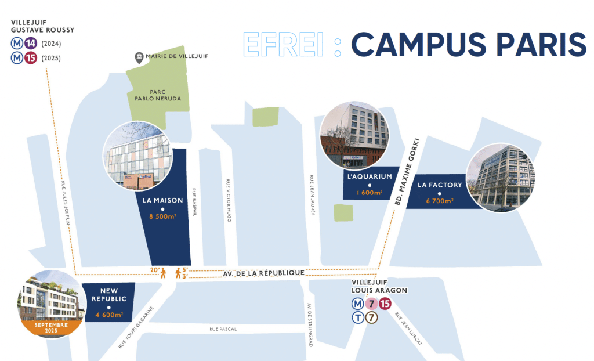

Un campus accessible, une admission claire, un accompagnement vers votre avenir
Retrouvez ici toutes les informations essentielles pour contacter le département, comprendre les modalités d’admission et préparer votre venue sur le campus de Villejuif.
Voir les admissionsCoordonnées du département / campus
Adresse
30-32 avenue de la République
94800 Villejuif
Téléphone
+33 1 88 28 90 01
Email admissions
admissions@efrei.fr
Accueil campus
+33 1 88 28 90 00
Procédure d’admission
L’EFREI propose plusieurs voies d’admission selon le niveau d’entrée : post-bac, admissions parallèles en bachelor ou admissions parallèles en cycle ingénieur.
Les différentes voies d’admission
Post-bac
Pour le Programme Grande École post-bac, la candidature se fait sur Parcoursup via le Concours Puissance Alpha.
Concours Puissance Alpha
L’EFREI précise une sélection fondée sur l’étude de dossier et des épreuves selon la voie choisie.
Admissions parallèles
Les admissions parallèles concernent notamment les entrées en B1, B2, B3 et M1, avec dépôt du dossier de candidature sur le site EFREI.
Étude de dossier / entretien
Pour certaines admissions parallèles, la sélection se fait sur étude de dossier puis entretien de motivation si le candidat est admissible.
Résumé pratique du processus
| Profil | Voie d’admission | Éléments de sélection |
|---|---|---|
| Post-bac | Parcoursup / Concours Puissance Alpha | Dossier + épreuves selon le programme |
| Bachelor Bac+3 | Parcoursup ou candidature selon la formation | Étude de dossier + oral pour plusieurs bachelors |
| Admission parallèle | Dossier sur efrei.fr | Étude de dossier + entretien si admissible |
| Cycle ingénieur | Admission parallèle possible | Dossier + entretien de motivation |
FAQ
Comment candidater après le bac ?
Pour le Programme Grande École post-bac, la candidature passe par Parcoursup via le Concours Puissance Alpha.
Existe-t-il des admissions parallèles ?
Oui. L’EFREI propose des admissions parallèles pour plusieurs niveaux, notamment en B1, B2, B3 et M1 selon les programmes.
Comment trouver un stage ou une alternance ?
Les étudiants peuvent être accompagnés par le Career Center, que l’EFREI met en avant pour les stages et l’alternance.
Les frais de scolarité peuvent-ils être échelonnés ?
Oui. Plusieurs pages programmes EFREI indiquent un règlement possible en 2, 4 ou 10 fois selon la formation.
Le campus est-il bien desservi ?
Oui. Le campus de Villejuif est desservi par les lignes 7 et 15 à Villejuif–Louis Aragon, et la ligne 14 à Villejuif–Gustave Roussy.
Le campus est-il proche de Paris ?
L’EFREI indique que le campus Paris est situé à environ 15 minutes en métro du centre de Paris.
Venir au campus
Métro ligne 7
Arrêt : Villejuif – Louis Aragon
Métro ligne 15
Arrêt : Villejuif – Louis Aragon
Métro ligne 14
Arrêt : Villejuif – Gustave Roussy
Temps d’accès
Environ 15 minutes en métro depuis le centre de Paris
Plan d'accès
